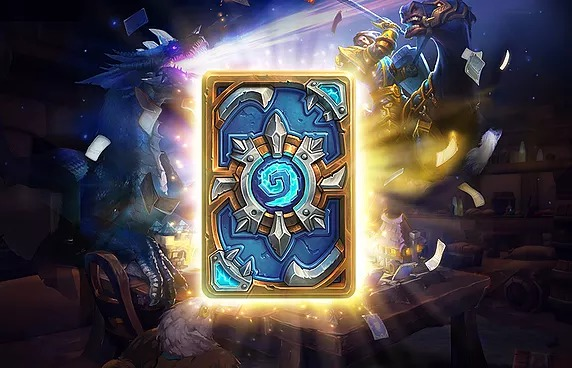

Термины, сленг в Hearthstone
Все о профессиональном языке игры.
Начиная играть в Hearthstone, многие игроки сталкиваются со множеством непонятных слов при ее изучении. В данной статье мы собрали для вас боьльшинство используемых терминов и их значение.
Общие понятия
Архетипы колод: Контроль, Аггро, Темпо, МидРендж:
- Контроль (Control) – медленный тип колод, рассчитанный на получение раннего контроля стола, для последующего вывода больших существ.
- Аггро (Aggro) — тип колод рассчитанный на наиболее быстрое нанесения урона по герою противника вне зависимости от его действий.
- Темпо (Tempo) — тип колод, в котором основной целью является получение раннего контроля стола, путём вывода большого количества небольших существ и совершения выгодных разменов.
- МидРендж (MidRange) — тип колод, рассчитанный на нанесение максимального урона по герою противника в средней стадии игры и последующим убийством его при помощи комбо.
Дров (от англ Draw – Тянуть, тащить) – способность игрока получать дополнительные карты (с помощью других карт или силы героя).
Дроп (1-й дроп, 5-й дроп – от англ. Drop – падать, роня ть) – Существо, которое можно выложить на стол на определённом ходу, не потеряв её ценности.
Игра по кривой – разыгрывание карт, с соответствующей данному ходу стоимостью.
Комбо (Combo) – комбинация карт, которая при правильном и последовательном использовании имеет большую эффективность.
Кривая маны (mana curve) – Кривая линия, составляющаяся путём соотношения стоимости карт и их количества в колоде.
Миракл (Miracle – чудо) – термин, пришедший из Magic: The Gathering, обозначающий вытягивание огромного количества карт за один ход.
Муллиган — (англ. mulligan – перемешивание) фаза в начале игры, где игроки выбирают свои стартовые карты.
ОП, OP (OwerPowered) – сверх мощный. Карта, являющаяся чересчур сильной, нарушающая баланс в матче.
ОТК комбо (One turn kill combo) – комбинации способные убить за 1 ход; то есть наносящие урон превышающий количество жизней противника.
Процесс игры
Игра делится на 3 фазы:
- Early game (Ранняя игра) ~ до 4 маны
- Mid Game (Середина игры) ~ до 7 маны
- Late game (Поздняя игра) ~ от 8 маны и до конца игры
Рука (Hand) – карты, которые игрок имеет на данный момент перед собой. Рука может содержать до 10 карт, при превышении этого количества карты сгорают открываясь противнику.
Ремувал (remove – убирать) – карта, способная уничтожить существо.
Стартовые карты – первые 3 (или 4 в зависимости от хода) карты с которыми игрок начинает партию.
Темпо (Tempo) – Преимущество, выражающееся в совершении выгодных разменов, максимально выгодное использование карт и маны, время, выигрываемое, путём совершения тех или иных действий в процессе игры.
TopDeck (ТопДек) – закрепившееся словосочетание обозначающие удачу игрока при вытягивании верхней карты из колоды, которая является самой необходимой для него в сложившейся ситуации.
Salty (солёный) — закрепившееся выражение “To be salty” — злиться или быть расстроенным из-за того, что ты сделал или сделали тебе. Также встречается понятие "засолиться". В игре таким выражением говорят о попытках проигравшего игрока оправдаться невезением.
АОЕ - урон по площади. Проще говоря, АОЕ урон наносит повреждение нескольким персонажам. Например, заклинание Волна огня наносит АОЕ урон, в отличие от заклинания Огненный шар, которое может нанести урон лишь по одной цели.
Зачистка стола (чистить стол) - как правило, это АОЕ заклинания, которые позволяют уничтожить всех миньонов противника. Зачисткой стола, так же можно назвать убийство существ оппонента своими.
Контроль стола (контролить стол) - ситуация при которой один из игроков имеет одного или несколько миньонов на столе, в то время как у противника существ на столе нет. Сохранение контроля над столом чрезвычайно важно т.к позволяет уничтожать существ противника без потери карт из руки.
Персонаж - персонаж объединяет в себе понятия миньонов и героев. То есть если в описании карты написано “наносит урон всем персонажам противника”, это значит, что урон пройдет как по существам, так и по герою.
Преимущество по картам - это понятие относится к ситуации, когда один из игроков имеет больше карт на руке, чем другой. Преимущество по картам очень полезно, так как открывает больше возможностей для ответа в каждой конкретной ситуации.
Синергия - термин, относящийся к двум или более существам или заклинаниям, имеющим взаимодействие, которое увеличивает их общие характеристики (например, Кольцо льда и Ледяное копье или Призвать Собак и Жонглер Кинжалами).
Ванильный (ваниль) - термин относится к существам без особых способностей (боевых кличей, исступления и т.п.), например к Морозному Йети.
Размен - ситуация, при которой существо атакует миньона противника, и они оба умирают.
Раш - стиль игры. Раш колоды основаны на розыгрыше большого количества мелких существ и внесения быстрого летального урона, до того как противник успеет как-либо отреагировать. Обычно контриться провокаторами или полным контролем стола.
Розыгрыш - действие или набор действий, которые применимы в конкретной ситуации. Хороший розыгрыш отличается уничтожением всех угроз со стороны оппонента и захватом контроля над столом. Например, у вас в руке могут быть различные комбинации существ и заклинаний от эффективности использования, которых и зависит (во многом) исход игры.
Драфт - в режиме Арены представляет собой выбор из 90 карт, из которых вы можете создать свою колоду. Процесс выбора карты называется драфтинг.
Миньон (существо) - представляет собой существ, которых вы призываете на стол, используя карты. (Если заклинание наносит урон всем существам, это значит, что оно не навредит героям).
Таргет (цель) - выбор цели в Hearthstone производится при помощи мыши, но некоторые существа не могут быть выбраны целью заклинания и уязвимы лишь для прямых атак (Чудесный дракончик) и АОЕ (миньоны с маскировкой). Данный термин применяется при описании подобных существ.( Например, Чудесный дракончик не может быть таргетом, т.е целью, направленных заклинаний и способностей героев).
ММР - Матч мэйкинг рейтинг – скрыт, привязан к каждому игроку и влияет на подбор противника в режиме игры и на арене. По сути дела показывает ваше Мастерство.
Если вы не нашли термин, который искали, то напишите о нем нам. Мы его добавим и подробно опишем значение.
Источник: hearthzone.ru  Перейти к гайдам Hearthstone